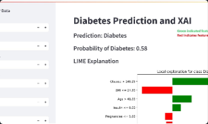
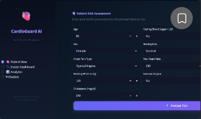
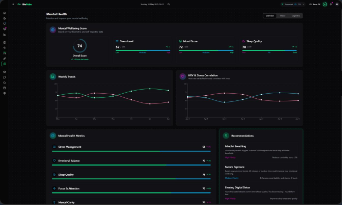
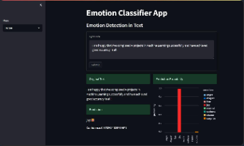

01 / MACHINE LEARNING
Diabetes Prediction
An SVM-based diabetes prediction app with standardized inputs and an interactive Streamlit interface.
- Python
- Scikit-learn
- SVM
- StandardScaler
- Streamlit
Currently exploring Generative AI
Aspiring AI/ML Engineer Generative AI Enthusiast
I am a Computer Science Engineering student passionate about Artificial Intelligence, Machine Learning, and Generative AI. I enjoy learning new technologies and building intelligent applications that solve real-world problems.
A little about me
I’m a Computer Science Engineering student at GIET Ghangapatna, drawn to the ways intelligent systems can make a meaningful difference.
I’m exploring the foundations of machine learning, deep learning, natural language processing, and generative AI. I enjoy learning by building and want to keep growing my skills through thoughtful, useful AI-powered applications.
Let’s connectSelected work
A selection of my projects across machine learning, NLP, and AI-powered applications.

01 / MACHINE LEARNING
An SVM-based diabetes prediction app with standardized inputs and an interactive Streamlit interface.

02 / MACHINE LEARNING
A K-nearest-neighbors heart disease prediction project with a Streamlit user interface.

03 / PREDICTIVE MODELING
A mental health score predictor built with a machine learning pipeline and data-processing tools.

04 / NATURAL LANGUAGE PROCESSING
An NLP emotion prediction app using a BiGRU model, with a FastAPI backend.
Technical toolkit
A snapshot of the tools and topics I’ve learned and used across programming, AI, and application development.
My foundation
My academic journey in computer science and foundational studies.
Undergraduate degree
GIET Ghangapatna
Expected Graduation: 2028
Higher secondary education · +2
Jagannath Prasad, Ganjam, Odisha
Secondary education · Class X
Kamasara Gada, Ganjam, Odisha
Have a question or an idea?
I’m always glad to connect with people interested in AI, machine learning, and emerging technology.
Say hello